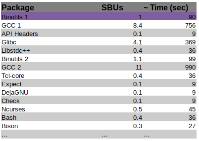
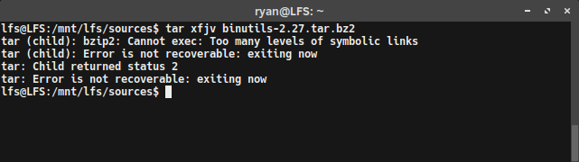

Well, after all of the preparation, we are ready to start compiling packages. This post cover compiling all the packages, but it will detail the first build of Binutils, which is arguably the most important package to compile. Why is Binutils so crucial? It determines the SBU time for your build system. What’s an SBU? Read on to find out!
SBUs

A table of package SBUs and their predicted build time
When completing LFS, people commonly want to know how long it will take to compile each package. Unfortunately, build times are very much dependent on the power and configuration of the system the packages are being compiled on. Some packages may take a few minutes on a powerful workstation, but hours on an aged laptop. While it cannot be said how long a specific build will take on any device, we can normalize how long each package build takes comparatively to each other. This normalization is done using Stand Build Units, or SBUs.
A SBU is the unit of time measurement it takes to make and install a standard package. Each package in the LFS book has a SBU value, so that build times can be gauged. So, if The first package to be constructed in the book (and in this post), is Binutils, so that is the package which SBUs are normalized to. For example, if it took 10 minutes to build Binutils on your machine, then 1 SBU = 10 minutes for that machine. This means a 4.5 SBU package can be expected to take ~45 minutes to build.
SBU Accuracy
SBUs are not completely accurate, and should be used as an estimate at best. Due to the many factors that may differ between setups, SBUs can be off by dozens of minutes in worst-case scenarios. Certain make options might also throw the system off.
For example, systems with multiple cores can run “parallel make” using the -j make-flag, as in make -j4. This tell make to compiled the package using multiple cores. Parallel compilation has the potential to speed up the build process significantly. However, due to how compilation jobs are divided for parallel builds, SBUs are even harder to predict and may be even more sporadic. Just remember that and don’t expect too much SBU accuracy when using make -j. Also, if you ever run into a problem during a build step, it is a good idea to first retry with a single processor build. If this does not fix the issue itself, the error message can at least be more easily analyzed.
My Encountered Issues with tar…

The first time I attempted to make binutils, I encountered a few errors. The gist of it was that I was not able untar the package correctly, at least from the lfs user. Everything worked fine from the root or even ryan user accounts, but running tar on lfs returned the following error:
tar (child): bzip2: Cannot exec: Too many levels of symbolic links
tar (child): Error is not recoverable: exiting now
tar: Child returned status 2
tar: Error is not recoverable: exiting now
I searched around but much of the initial advice didn’t help my problem. It often indicated that my /usr/bin/bzip2 might be a symlink and should be altered. That wasn’t the case. Then tried something that illuminated the issue: I removed the /tools/bin from the begging of the path variable (defined in the lfs .bashrc file). That temporarily fixed the issues. So I knew the problem was related to the symlink I setup in the previous LFS post, specifically the ln -sv $LFS/tools / command. It must have failed and I wasn’t paying attention.
Now that I was knew what the problem was, I was able to fix it by running the following commands (some of them might need to be run from a root/sudo account):
rm -rf $LFS/tools
rm -rf /tools
mkdir -pv $LFS/tools
ln -sv $LFS/tools /
These commands remove and reset the tools symlinks. I then made sure to re-add /tools/bin to the begging of the path var in the lfs .bashrc and test it. Problem fixed!
Extracting BinUtils
It is important that Binutils is built first in the process. This is mostly because when Glibc and GCC are built, they perform various tests on the linker and assembler to figure out which of their own features to enable.
To start building BinUtils, move to the sources directory ($LFS/sources) and extract the package with (If you encounter issues, see section above):
tar xfjv binutils-2.27.tar.bz2
Note: You’re version might be different
The Binutils documentation recommends building it in a dedicated build directory, so lets go ahead and make, then enter, that directory:
mkdir build
cd build
Making & Executing a Build Script

Now it is time to build. Normally, this would best be done by sequentially performing a series of configure, make, and make install commands, but for the first binutils compilation, we want to get an accurate reading on how long it takes (to determine our SBU time). To accomplish this easily, I put all of the commands into a bash script. This way, I could execute the script, and easily time the whole process using the time utility. To create the script, I wrote the following commands into a file (build-binutils.sh):
#!/bin/bash
../configure --prefix=/tools \
--with-sysroot=$LFS \
--with-lib-path=/tools/lib \
--target=$LFS_TGT \
--disable-nls \
--disable-werror
make
case $(uname -m) in
x86_64) mkdir -v /tools/lib && ln -sv lib /tools/lib64 ;;
esac
make install
The various options of the configure command mean the following:
--prefix=/tools: Configures the build to install the Binutils programs to the /tools directory--with-sysroot=$LFS: For cross compilation, tells the build system to look in our $LFS directory for the target system libraries, as needed.--with-lib-path=/tools/lib: configures the library path that the linker should be configured to use.--target=$LFS_TGT: the machine description in theLFS_TGTvariable is slightly different than the value returned by the config.guess script, so this option will tell the configure script to adjust Binutil’s build system for building the cross linker.disable-nls: disables the internationalization, as it is not needed for the temporary tools.disable-werror: Prevents the build from stopping in the event that there are warnings from the host’s compilier.
Also, the case statement creates a symlink to ensure the sanity of the tool chain, if building on a x86_64 architecture.
To runs the script, first make it executable,
chmod +x build-binutils.sh
Finally, time and execute the script:
time ./build-binutils.sh
When the script completes, the time it took to run it will be printed out. Congratulations, this is the SBU for your system!
Once I had my standard single-thread SBU value, I wanted to do a run with the -j4 make flag for comparison. To “reset”, I deleted the contents of the binutils/build/ directory, as well as $LFS/tools/. I then edited my build-binutils.sh script to do a parallel compile by changing make line to make -j4. I then re-ran the script with time. Note: This is not described anywhere in the official documentation, but is just my best guess at what to do for a re-run of binutils. I very well may be missing steps. However, remember LFS is a learning experience, so we will find out!
Checking the Build

After the build is complete, it is a good idea to run the tests, especially for binutils. In this case, use the make command:
make -k check
Building the Chapter 5 Tools From Here on Out…
For the sake of time, I will not be writing posts detailing the build process for each of the remaining packages in Chapter 5. I might keep a little log about how each of the builds went and post it, but I am unsure. If I encounter any major snags along the way, I will be sure to write a post detailing them. Otherwise, with any luck, my plan is to keep compiling and see you in Chapter 6!